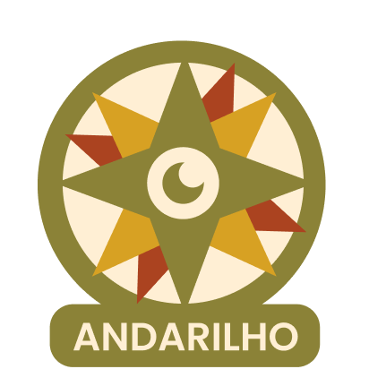

Parabéns porconcluir sua jornada!

“Senão quando o amor de Deus; Ao vento que anda, desanda, e sarabanda, e ciranda, confia uma sementinha perdida entre terra e céus, e o vento a trás à varanda daquela minha janela”